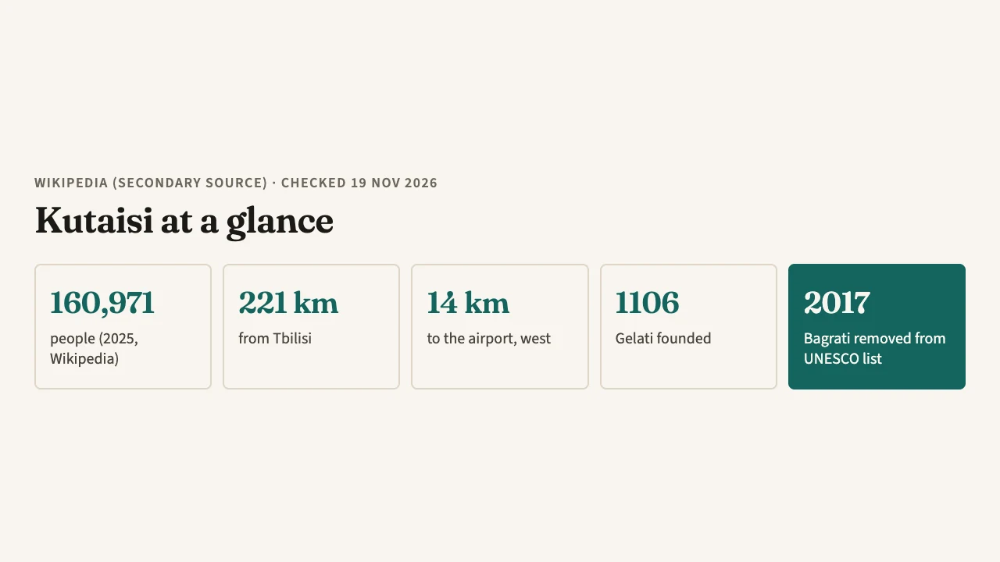

- Third-largest city
- 160,971 people (2025)
- From Tbilisi
- 221 km
- Airport
- 14 km west
- Hottest
- August, 30.2 °C
- Emergency
- 112
This page is about Georgia the country, not the US state, and is part of our travel guide. Checked on 19 November 2026.
Things to do in Kutaisi
Start with three old churches: Bagrati in the centre, then Gelati and Motsameta outside town. Add a walk by the river.
An old city. Wikipedia calls it "one of the oldest continuously inhabited cities in the world". It says the city is "located along both banks of the Rioni River". The photos in the same article include the White Bridge and the Colchis Fountain.

Bagrati Cathedral
The cathedral rests on Ukimerioni Hill in the centre. It dates from the 11th century, according to Wikipedia.
History. An inscription on the north wall gives the year 1003 for the floor, Wikipedia says. It adds: "In 1692, it was devastated by a cannonball shot by Ottoman troops who had invaded the Kingdom of Imereti." The cupola and ceiling collapsed.
The UNESCO story. In 1994, UNESCO inscribed one site under the name "Bagrati Cathedral and Gelati Monastery". Restoration began in the 1950s; according to Wikipedia, controversial conservation works ended in 2012. Wikipedia calls them controversial: "These works prompted UNESCO to include the cathedral on its list of endangered World Heritage Sites, and then to remove the church from the World Heritage list." The infobox gives the year it was delisted as 2017.
Out of date online. Some search summaries still describe the cathedral as on the list. That was true until 2017, but no longer.
Our tip. In July and August, average highs pass 29 °C. Climb the hill in the morning or late afternoon, and carry a drink.
Gelati Monastery
This medieval complex stands near the city and keeps its World Heritage status. Wikipedia says it "was founded in 1106 by King David IV of Georgia as a monastic and educational center".
David the Builder. Wikipedia gives the founder as David IV, also called "David the Builder". When building began, it adds, Kutaisi was the capital of Georgia.
Status today. "The monastery is a UNESCO World Heritage Site," Wikipedia says. It is the half of the 1994 listing that stayed on the list.

Our tip. Our sources give no distance from the centre, so we give none. Agree the return trip with your driver before you set off.
Motsameta Monastery
This complex of monasteries sits above a river bend. Wikipedia puts the complex "approximately 6 km northeast of the center of Kutaisi".
The setting. It stands "on the cliff of a promontory in the curve of the Tskaltsitela river, a tributary of the Rioni", Wikipedia says.
Our tip. The site sits on a cliff. Wear shoes with grip and keep children close to you.
Further out. Prometheus Cave is about 34 km from the city, by the national parks' figure; see our Martvili Canyon guide. The same guide covers Martvili Canyon itself, 45 km away by the national parks' figure. Sataplia, with its dinosaur footprints, and the spa town of Tskaltubo, 9 km away by Wikipedia's figure, are in our Tskaltubo guide.
Arriving at Kutaisi airport
Flights land 14 km west of the city. The code on your ticket is KUT.
The basics. Wikipedia says it is also known as "David the Builder Kutaisi International Airport". It is "located 14 km (8.7 mi) west of Kutaisi". United Airports of Georgia runs it. Wikipedia lists it as a "focus city for Wizz Air".
Into town. For shuttles and buses, check the official site, kutaisi.aero, before you fly. We give no fares or times: we could not check them.
Your cover. Visitors need health and accident cover of at least 30,000 GEL for their whole stay; see the entry rule on travel insurance. The UK entry requirements warn: "You may be asked for evidence of this, either by your airline at check-in or by immigration authorities when you arrive in Georgia."
Flying into the capital instead? See our Tbilisi airport guide.
Our tip. Keep a printed copy of your policy in your hand luggage. Save 112 in your phone before you land.

Kutaisi weather by month
Summers are hot, and rain falls in every month. October, December and January are the wettest.
The figures below are 1991–2020 averages from NOAA, as summarised on Wikipedia, a secondary source. Rain is rounded to whole millimetres. Rainy days are days with at least 1 mm.
| Month | Average high, °C | Rain, mm | Rainy days |
|---|---|---|---|
| Jan | 9.7 | 138 | 12.5 |
| Feb | 10.9 | 117 | 11.1 |
| Mar | 14.7 | 134 | 12.5 |
| Apr | 19.9 | 86 | 9.9 |
| May | 24.5 | 85 | 9.2 |
| Jun | 27.6 | 101 | 8.9 |
| Jul | 29.4 | 86 | 8.8 |
| Aug | 30.2 | 78 | 7.4 |
| Sep | 27.0 | 117 | 8.3 |
| Oct | 22.3 | 145 | 9.5 |
| Nov | 16.0 | 129 | 10.4 |
| Dec | 11.6 | 143 | 11.4 |
Hottest. July and August average 29.4 and 30.2 °C by day. The record high in the same table (1981–2020 extremes) is 43.1 °C, set in July.
Coldest. January averages 9.7 °C by day and 3.7 °C at night.
Wettest and driest. October gets the most rain, 145 mm, just ahead of December (143 mm) and January (138 mm). August is the driest month, with 78 mm. The year adds up to about 1,358 mm.

Rainy days. January and March have the most, 12.5 each. August has the fewest, 7.4.
Our reading. May and June are warm with less rain than autumn. Our tip: whatever the month, pack a rain jacket. To compare the city with the rest of the country, see our best time to visit Georgia guide.
Water and food: avoiding a stomach bug
Official advice is short: wash your hands, and treat a stomach bug with fluids and rest. The NHS says diarrhoea and vomiting "can usually be treated at home".
From the tap. The UK health advice lists, among health risks in Georgia, "varying water quality – bottled water is widely available". We add no verdict of our own.
Food and hands. Canada's travel advice tells visitors to "wash your hands often". It also says: "Travellers' diarrhea is the most common illness that affects travellers."
Symptoms. The NHS page on food poisoning lists "feeling sick or being sick", diarrhoea, "tummy pain" and "a high temperature".
At home. "The most important thing is to have lots of fluids to avoid dehydration," the NHS says. Rest, drink often and "take small sips if you feel sick".
When to get help. The NHS names these warning signs:
- diarrhoea "for more than 7 days or vomiting for more than 2 days";
- "bloody diarrhoea";
- you "keep being sick and cannot keep fluid down".
The NHS sends UK readers to 111 in these cases. In Georgia, see a doctor. The NHS says to call 999 (in Georgia, dial 112) if you vomit blood or something that looks like ground coffee, have a sudden, severe headache or tummy ache, a stiff neck with pain when looking at bright lights, severe difficulty breathing, or are confused or not responding as usual.
Our tip. Heat makes dehydration worse. On summer day trips to the monasteries, carry a full bottle and refill it often.

Kutaisi to Tbilisi and Batumi
The capital lies to the east and Batumi to the west. For any train, check the official timetable first.
Distance. Wikipedia puts the city "221 kilometres (137 miles) west of Tbilisi".
To Batumi. The general schedule of Georgian Railway, checked on 19 November 2026, lists two daily Kutaisi–Batumi electric trains. Their numbers are 682/681 and 684/683.
To Tbilisi. Check current trains on railway.ge before you travel. Do not rely on old guides or forum posts.
Times and fares. We give none. They change, and the railway's site is the place to check.
Our tip. Plan long transfers in daylight. In July and August, take drinks and snacks for the whole journey.
Hospitals and doctors in Kutaisi
In an emergency, dial 112. For a problem that can wait, the city has many clinics and a number of hospitals.
Emergency. The UK health advice says: "Dial 112 and ask for an ambulance." Our 112 guide explains how to call and what to say.
Clinics. The catalogue of doctors and clinics in Kutaisi on 100doc.ge listed 139 clinics on 19 November 2026. Of these, 25 had a hospital profile, 32 a dentistry profile and 14 were medical laboratories.
Before treatment. GOV.UK adds: "Contact your insurance company quickly if you're referred to a medical facility for treatment."
Dogs. GOV.UK lists "rabies – treatment is available in Tbilisi and major towns". It says: "If you're bitten or scratched by a dog, get medical attention immediately." See our rabies guide.
Our tip.
- Bring enough of your regular medicines for the whole stay, in their original packs.
- Carry a list of your medicines and conditions in English.
- Save 112 and your host's number in your phone.
Frequently asked questions
Can you drink tap water in Kutaisi?
We give no verdict. The UK government lists "varying water quality – bottled water is widely available" among health risks in Georgia.
How far is Kutaisi from Tbilisi?
Wikipedia puts it 221 km (137 miles) west of the capital. For trains, check the timetable on railway.ge.
How far is the airport from the city?
It lies 14 km west of Kutaisi, according to Wikipedia. Its code is KUT. For shuttles into town, check kutaisi.aero.
Is Bagrati Cathedral a UNESCO site?
Not any more. UNESCO listed it together with Gelati in 1994. Wikipedia gives 2017 as the year it was delisted, after controversial restoration. Gelati remains a World Heritage Site.
What is Kutaisi known for?
Wikipedia calls it one of the oldest continuously inhabited cities in the world. Visitors come for Bagrati Cathedral, Gelati, founded in 1106, and the cliff-top Motsameta.
When should I see a doctor for food poisoning?
The NHS lists diarrhoea for more than 7 days, vomiting for more than 2 days, blood in diarrhoea, or not keeping fluids down. In Georgia, see a doctor. Dial 112 for vomiting blood, a sudden severe headache or tummy ache, trouble breathing or confusion.
Where can I find a hospital?
A catalogue listed 139 clinics in the city on 19 November 2026, 25 of them with a hospital profile. In an emergency, dial 112 and ask for an ambulance.
Sources
- Wikipedia: Kutaisi, including the 1991–2020 climate table (secondary source)
- Wikipedia: Bagrati Cathedral (secondary source)
- Wikipedia: Gelati Monastery (secondary source)
- Wikipedia: Motsameta Monastery (secondary source)
- Wikipedia: Kutaisi International Airport (secondary source)
- GOV.UK travel advice for Georgia: health
- GOV.UK travel advice for Georgia: entry requirements
- Government of Canada: travel advice for Georgia
- NHS: food poisoning
- Georgian Railway: general schedule
- National Parks of Georgia: how to get to Prometheus Cave
This guide is general information, not medical advice: the doctor decides on your care.